緊急傷患急救成功率
城鄉懸殊「同卡不同命」
據消防署統計，去年各縣市緊急傷患急救成功率，雙北分別逼近4成與3成，而《蘋果》走訪的屏東與嘉義，因偏鄉較多，傷患常錯過黃金救援時間，成功率僅15%左右，差距懸殊。
註：急救成功率算法：到院前無生命徵象的病患，在到院2小時內能恢復脈搏的比率。


據消防署統計，去年各縣市緊急傷患急救成功率，雙北分別逼近4成與3成，而《蘋果》走訪的屏東與嘉義，因偏鄉較多，傷患常錯過黃金救援時間，成功率僅15%左右，差距懸殊。
註：急救成功率算法：到院前無生命徵象的病患，在到院2小時內能恢復脈搏的比率。
多數偏鄉急救不及的案例，都屬這3種急重症。「重大創傷」如腦部或內臟損傷，黃金救援時間為1小時內。「急性缺血性腦中風」則為3小時內，符合條件者須施打「靜脈血栓溶解劑」，否則就有生命危險。
當然，無論任何一種急重症，救援時都是「越快越好」，慢了一分鐘，可能就是生與死的距離。
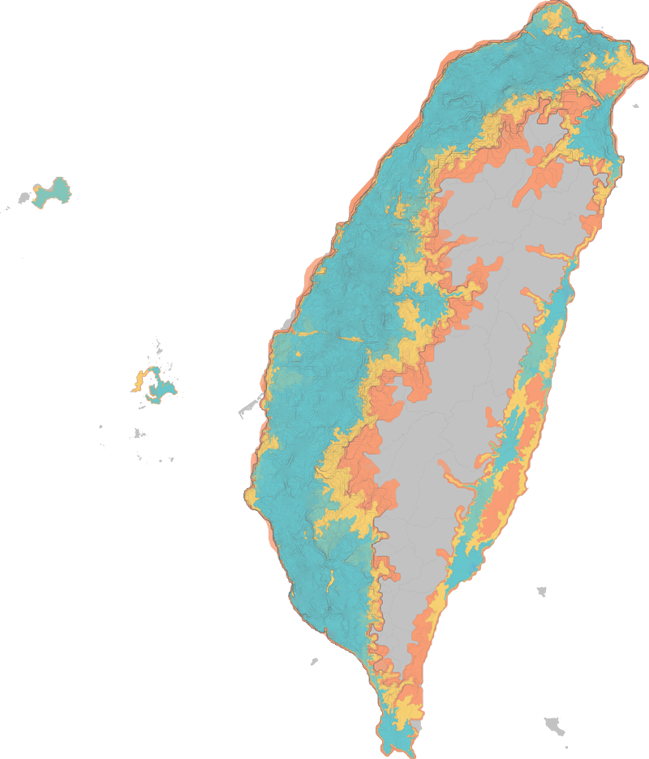
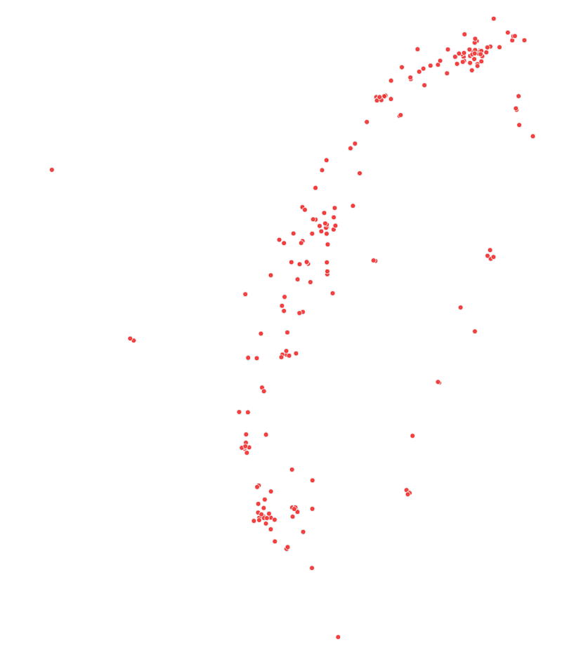
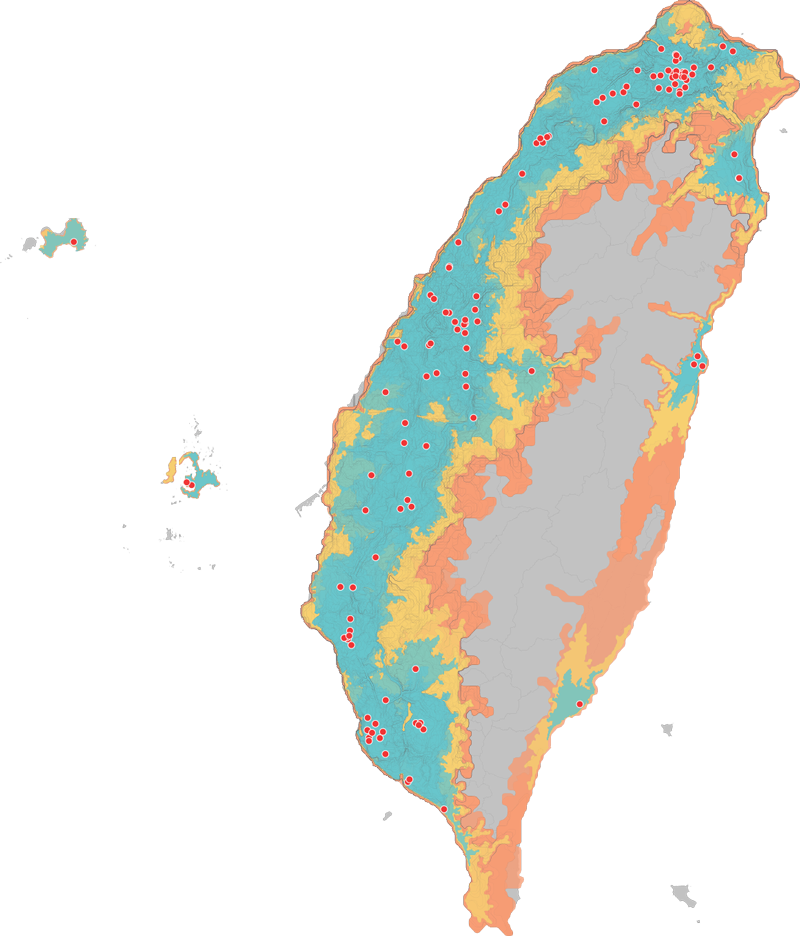
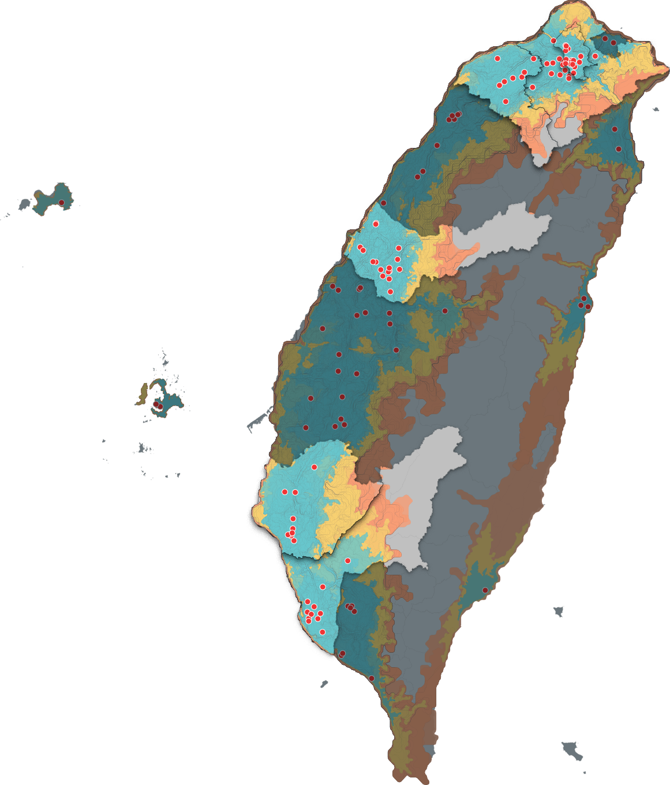
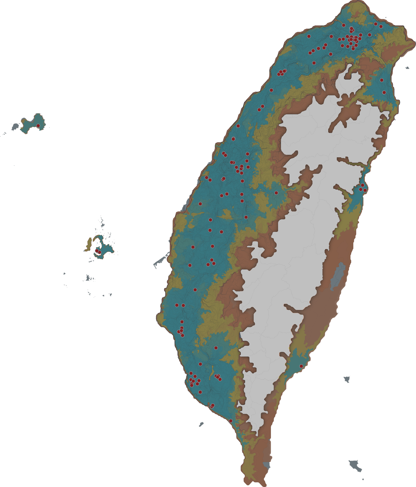
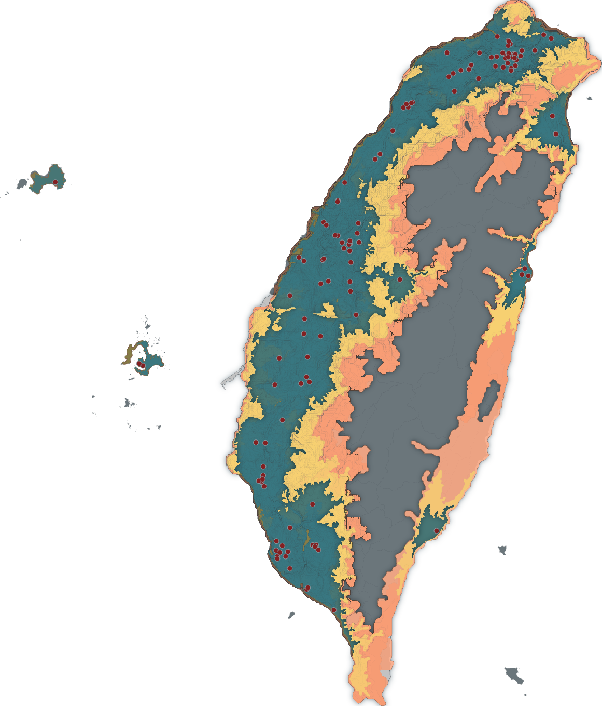
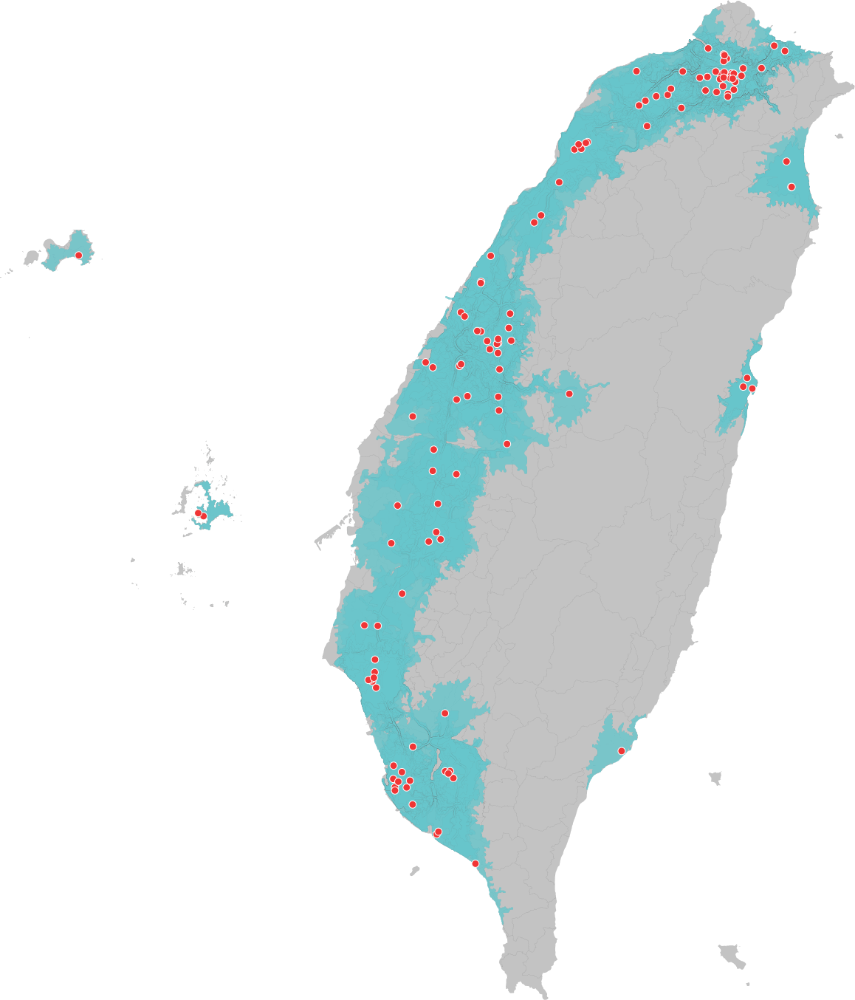
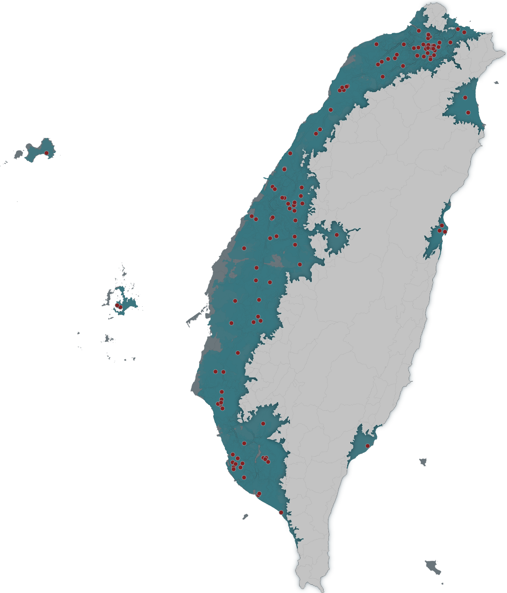
《蘋果》統整醫療大數據，發現全台有203家「急救責任醫院」，皆設有基本急診設備，醫療網看似完善。
若聚焦「中度」和「重度」級醫院，也就是能救援急重症的醫院，數量僅121間且集中六都，中南部偏鄉則很匱乏。
《蘋果》與瑞竣科技合作，以路網數據分析民眾送醫時間，顯示全國29個山地原民鄉，最遠的地方要開2小時的車，才能抵達中度或重度醫院，路途最遙遠。
在狹長的恆春，重大創傷病患送到重度醫院動輒1小時，當地醫師感嘆，同樣的病，在高雄能迅速處理，但在恆春，病患常在半路死亡。
曾在城市和偏鄉服務的消防隊員說，在城市裡，從接觸患者到送醫，最快5分鐘就能解決一個案件，和偏鄉形成強烈對比。
城市之外的「孤島」地區，須開車30分以上才能抵達中度或重度醫院。若加上報案耽誤、救護車趕到事發地和基層院所轉診的時間，很容易就超過黃金救援時間。
在《蘋果》走訪的偏鄉，不少民眾說：「我們沒有生病的權利」、「隨遇而安，這邊的人看得蠻開的」。面對醫療匱乏，他們只能無奈接受，與時刻迫近的死亡共處。
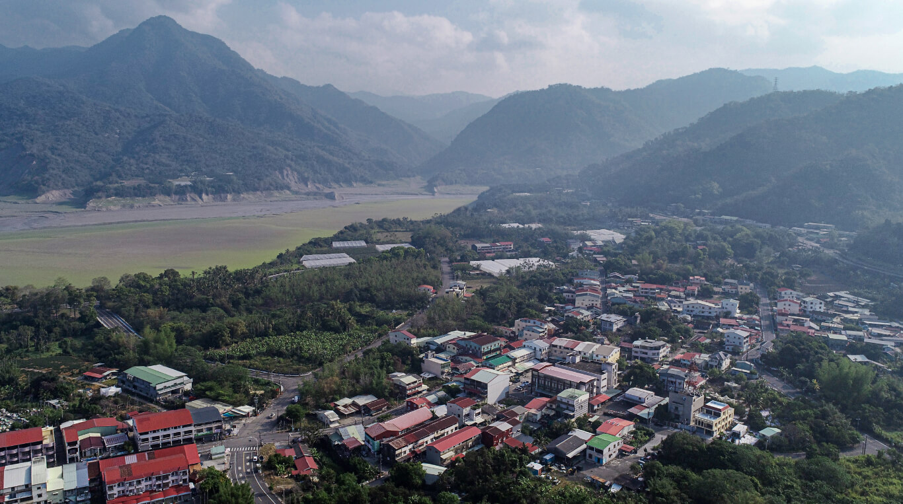

林奐成、劉怡馨、吳宜靜／採訪報導
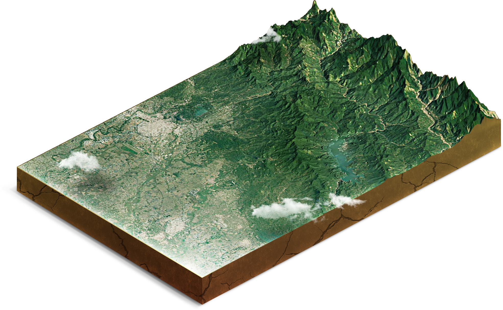
註：4大急重症為急性腦中風、急性冠心症、高危險妊娠及新生兒、緊急外傷
資料來源：《蘋果》彙整衛福部資料，截至2020/08/12
住在嘉義大埔69年的黃金麟，平常為遊客造路修橋，始終不願離開這座曾文水庫旁的小鎮，搬到山下城市。
那天，他留給妻子吳明葉的最後一句話是「明天，我們去灌吊橋的水泥。」
2個小時後，他被發現腦中風昏倒，因當地無法救援急重症，趕緊轉送市區的聖馬爾定醫院。但這段55公里長的蜿蜒道路，救護車開了70分鐘才到，儘管護理人員努力在劇烈搖晃的車上做CPR，到院急救仍沒有意識。
「醫生說，因為路程這麼遠，又那麼久才發現，整個腦都淤血了，沒辦法救。」吳明葉回憶今年1月那天，她決定不開刀，讓結婚37年的丈夫少點痛苦地走。
但這不是單一個案。當台灣今年以「Taiwan Can Help」的絕佳防疫成績，向全世界宣示參與醫療救援的決心時，這個島嶼上卻還有很多角落，得不到Help。
據《蘋果新聞網》調查發現，偏鄉「來不及救」的案例，一直反覆上演。以大埔為例，近3年有9人送醫時OHCA（到院前心肺功能停止），急救成功率是0，也就是無一救回。
更遠的阿里山鄉，14人僅救回1人；而在台灣南端的偏鄉滿州，34人救回4人，成功率僅1成。
不過，同樣是急救，同樣是人命，台北市、新北市的成功率，卻逼近3成與4成，全然凸顯了城鄉醫療救援能量的差距。
「在北部經驗是患者OHCA了，送到醫院有很大機會可以救回來，可是來這個地方後，只要我CPR壓到醫院的，通常都沒有回來。」曾在新北市也擔任過救護工作的大埔消防員葉准呈這麼說。
針對偏鄉困境，行政院長蘇貞昌11月7日出席「醫師節」活動時，開出一張大支票，強調已編列10億元預算，鼓勵公費醫師留在偏鄉服務。只是，政府真的對症下藥了嗎？
偏鄉居民命懸一線，急救能量低落的問題，恐怕不只是增加公費醫師就能解決。《蘋果》與衛星圖資公司「瑞竣科技」合作，進一步彙整醫療資源的大數據地圖，走進偏鄉現場，直擊緊急醫療的「三缺危機」。
《蘋果》此次調查，瑞竣科技協助彙整全台203間「急救責任醫院」的地理位置，並結合瑞竣的交通路網數據，計算從全台任一地點開車到醫院的時間。
衛福部觀察急救問題，主要以4大急重症的處理為主。所謂4大急重症，包括：急性腦中風、急性冠心症、緊急外傷、高危險妊娠及新生兒醫療。
《蘋果》透過大數據地圖調查顯示，能夠醫療4大急重症的121間中、重度責任醫院，高度集中西部城市，都市裡居民要找醫院急診，車程僅約30分鐘，許多偏鄉卻要花1到2小時，常錯過黃金救援時間。
以腦中風為例，黃金救援是180分鐘以內，但像嘉義大埔這類偏鄉，由於路途遙遠，時常來不及。居民黃蔡粉的丈夫，15年前因腦中風命喪救援途中，兒子在前年又中風送醫，雖撿回一命，但半身癱瘓無法言語，至今靠她扶養。
再以緊急外傷為例，黃金救援是60分鐘內越快越好，但偏遠地區如屏東南部，台26線送醫路途遙遠，時常發生救援不及的悲劇。
尤其是屏東僅有1家可以處理重大創傷的「重度」醫院，也就是屏北東港的安泰醫院。墾丁的遊客若輕傷，雖可在恆春找到當地3家醫院處理，但碰到重大創傷需要「重度」救援能力時，便得轉送75公里外的安泰，或130公里外的高雄榮總等醫院。
恆春民間救護車司機李朝裕，曾救援一名發生車禍的年輕人，家屬指定要送高雄義大醫院，車子跑到半路病患血壓驟降而轉送安泰，「也是救不回來，路途太遠了」，令他惋惜，他們期盼多年的屏南高速公路，也仍在未定之天。
除了上述地區，全台29個山地原住民鄉由於位處深山，救援難度也很高，海拔1000公尺的屏東霧台鄉就是一例。
當地衛生所主任兼醫師康孝明說，最深山的部落若發生急重症，救護車過去接人，再到山下最近醫院，都超過2個小時。「急救盡量不要超過半個小時，不過我們這邊常會碰到，光這樣子來去，很多都在半路死亡。」他說，之前衛福部曾研擬在高山設救護直升機的停機坪，但目前仍未實現。
以急救能量的指標之一「急救成功率」來看，在醫院多而密集的新北與台北，到院前心肺功能停止，但到院後恢復脈搏的急救成功率，分別逼近4成與3成，但偏鄉較多的嘉義與屏東，急救成功率僅約15%，低了至少一半。
在衛福部的統計中，全台平地、山地及離島共有123個醫療缺乏鄉鎮。《蘋果》走訪這些鄉鎮調查發現，偏鄉在急重症救援上，遇到的另一困境是救護人力吃緊。
以嘉義大埔為例，消防分隊僅有一輛救護車，若遇傷患就由2人開車去救，另外2人則處理其他勤務。因此，若再有救護任務，消防隊既沒有人力，也沒有車輛出勤，改由當地衛生所出動救護車救援。
只是，有段時間救護車司機過世，衛生所又無法補人，竟派出護理師陳永儒去考駕照頂上職缺。現為衛生所主任的陳永儒回憶，當時開救護車壓力超大，但他既是司機又是護理師，可以幫忙照護，「好像買一送一」，他苦笑說。
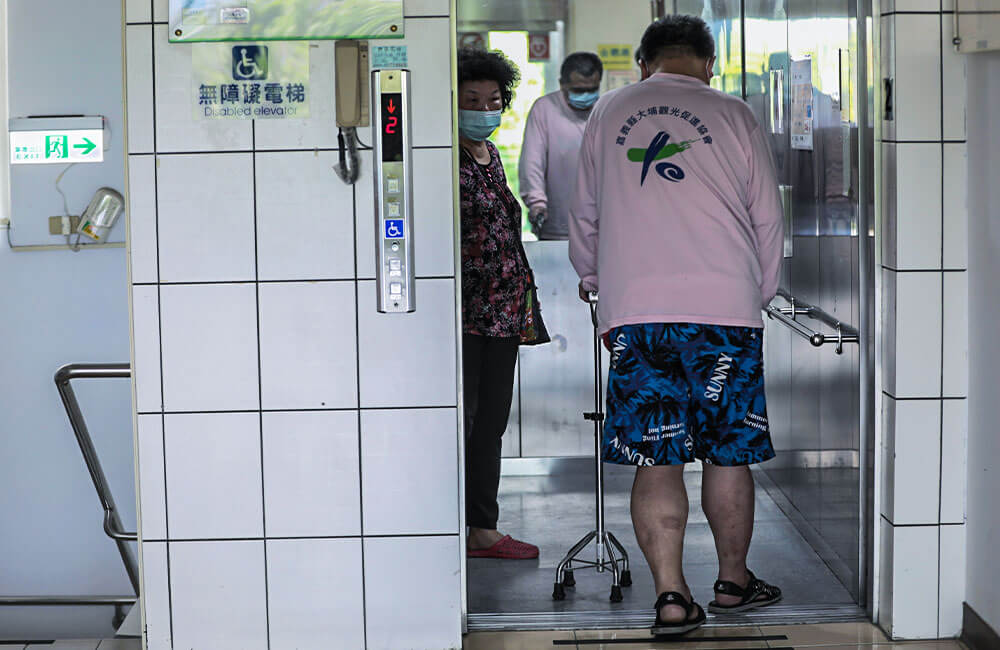
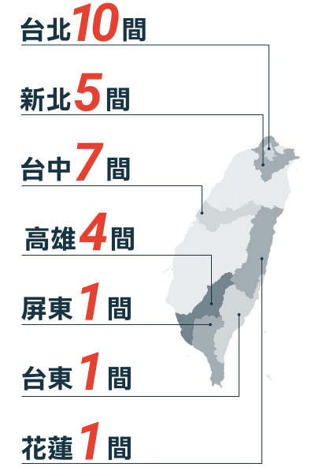
註：重度醫院能救援4大急重症，全年24h專科醫師值班，提供緊急手術，是醫療能力頂尖的「最後防線」
資料來源：《蘋果》彙整衛福部資料，截至2020/08/12
恆春半島也有類似情況。在偏遠的滿州鄉港仔村，由於消防分隊距離太遠，若有人發生急重症，常是由當地民眾開車載送病患一段路，再由救護車接手急救。
由此可見，偏鄉的第一線急救品質遠不如城市，而這樣的差距，往往就是生與死的距離。
偏鄉更缺專科醫生，許多行動不方便長者，若長期不去外地看病，很容易小病變大病，增加腦中風等急重症的風險。
以苗栗獅潭鄉為例，之前長期是「無醫鄉」，現在衛生所雖有一名內科醫師，但沒有次專科門診，居民習慣針對不同疾病下山看病。
當地百壽村居民朱月琴就說：「看骨科去頭份重光醫院，看心臟疾病去新竹台大醫院。」要到新竹，她會先開車再轉乘客運到醫院，一趟超過2個小時。如此遙遠路程，卻是偏鄉日常。
另一「無醫鄉」大埔，已長達20年沒有醫師執業，僅靠慈濟醫院大林分院設立醫療站支援，由一名家醫科醫師看診。雖然台南奇美醫院會派不同科別的專科醫師，到這邊來做巡迴門診，但每周僅1次且僅有單一科別，緩不濟急。
因此，許多居民選擇下山看病。在當地結婚生子的葉准呈無奈說，大埔醫療匱乏，嚴重的病都無法處理，小孩感冒發燒，也帶下山去看小兒科，因為他比較信任專科醫師的治療，也會請醫生多開一點藥，以備不時之需。「在這邊生活久了，自己都有自己生活的一套。」他苦笑說。
民進黨前立委、現為中山醫學大學附設醫院婦產部醫師的林靜儀認為，政府應先盤點不同地區，有哪些急重症服務不足，「它要改變標準，不能用人口（計算）。」
「區域醫院跟地區醫院，過去健保20年，整整萎縮了百分之80」，林靜儀分析，現有的健保給付制度，造成能支撐基層醫療的醫院都垮了，導致急重症救援過度轉移到醫學中心。他認為，應強化基層醫院的急重症能力，才能幫助偏鄉。
對於偏鄉「來不及」案例，衛福部醫事司司長劉越萍表示，偏鄉人口少，「發生緊急狀況有人過世，沒有改善，衝擊會比城市大，大家都會覺得沒進步」，但其實整體公共衛生絕對有進步，可是民眾無感。
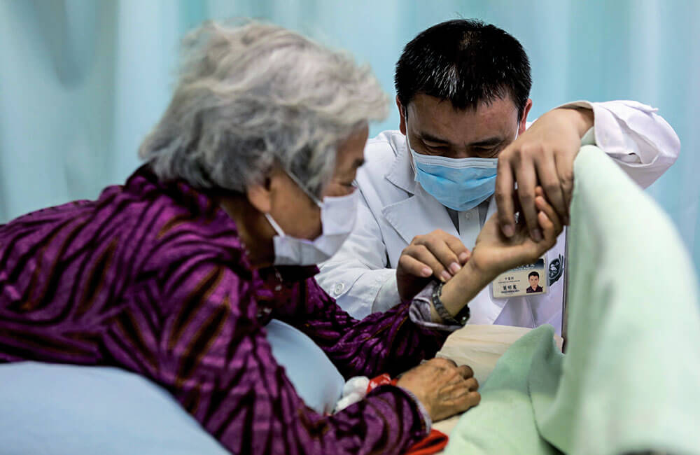
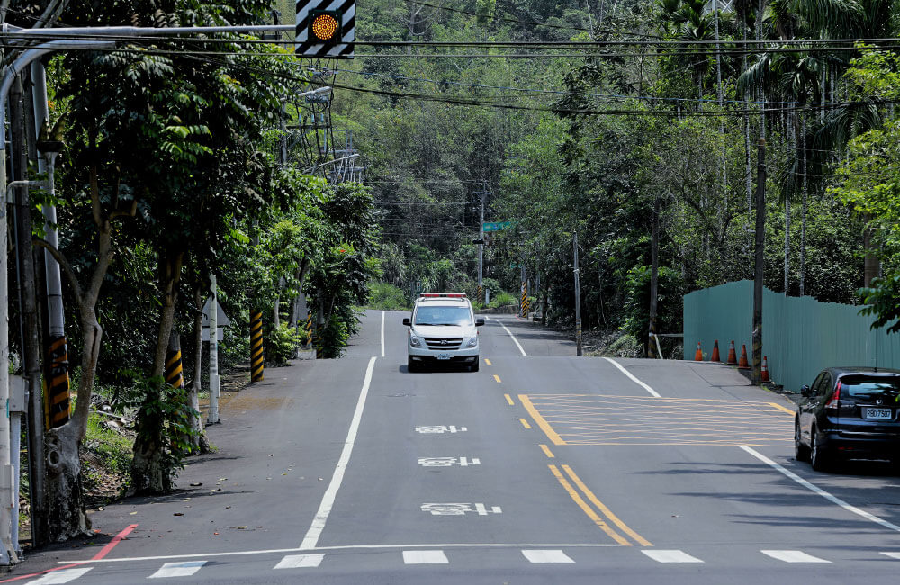
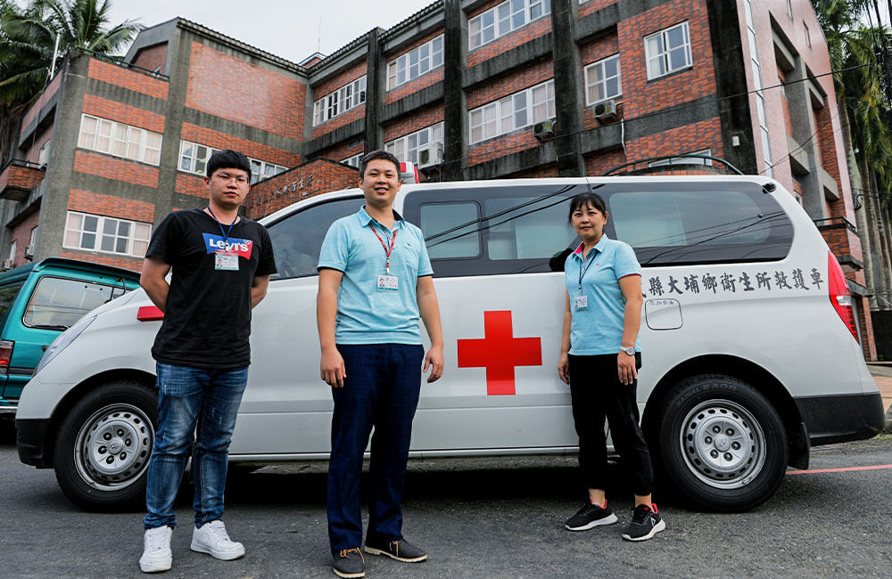
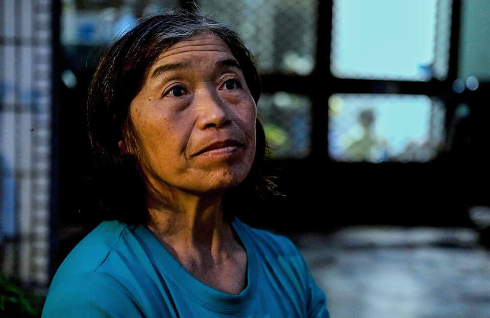
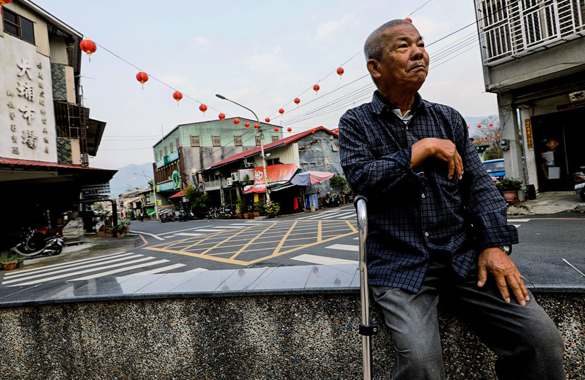
至於政府的緊急醫療網是否完善？她認為「達標60分」，目前全台除了南投，每個縣市都有至少一間重度級責任醫院，可應付急重症黃金救援。另外，衛福部也力推公費醫師的「留任獎勵政策」，要讓更多人才留在偏鄉。
不過，醫療改革基金會董事長劉淑瓊則認為，政府應增設醫療據點，或嘗試「轉院外接醫療團隊」與行動加護病房。
「同卡不同命，你今天跟人家收健保費，對於偏鄉本來就有責任，這些責任不能去算成本效益。」她強調。
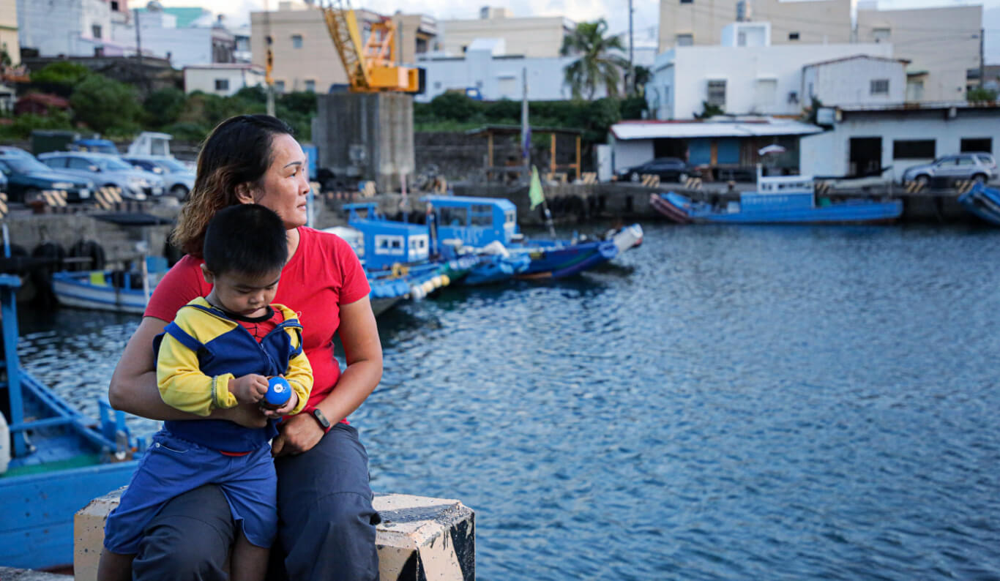

劉怡馨、吳宜靜／採訪報導
「吳小姐，早安，今天回來看你。」蔡儀榛熟捻地上香，對著桌上母親的照片，細數生活瑣事，那是她每天的例行公事。
蔡儀榛住在恆春鎮山海里，一座被山海包圍的小村莊。她的母親本來也住在附近，兩人互相照應生活，直到一年前的一場車禍，母親被緊急送往距離110公里外的高雄義大醫院，在半路失去心跳，從此再也沒回來。
來不及的不只她一人。恆春半島幅員廣闊，卻僅3家地區醫院，若遇上無法處理的急症，需要往北送至「重度急救責任醫院」如東港安泰、高雄義大及榮總，車程動輒超過一小時，常錯過黃金救援時間。
蔡儀榛談起往事仍不免哽咽，母親因車禍導致身體多處骨折，送往恆春南門醫院，卻因為傷勢過重，必須後送到高雄義大醫院，「醫生已經發出病危通知，可能送到那邊（高雄）不太可能，但我們還是要送，因為這邊沒器材。」
那天下很大的雨，蔡儀榛坐在救護車上忐忑不安，在這一小時的車程裡，看著母親病情越加惡化，她只能在心裡祈禱，「如果媽媽你要走，就要去好的地方。」一到醫院門口，母親果然已經沒有脈搏心跳。
母親的遺憾，讓她不禁質疑，是否因為後送路途太遙遠，而錯過救援時間，「是不是偏鄉地區，（醫療）就比較吃虧？」
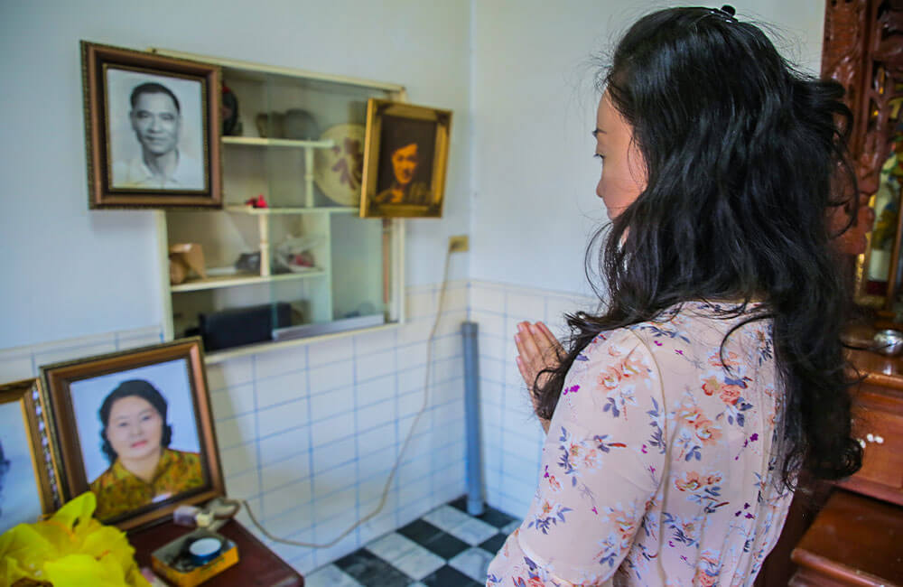
同樣是重大車禍創傷，同樣在這座村莊裡，陳秀芳的姪子，也在送醫途中死亡。
那天是4月1日愚人節，陳秀芳與她25歲的姪子相約在家吃飯，但飯菜都涼了，卻始終沒見人進門，只聽見救護車鳴笛聲在村子裡迴響。
不久，她接到通知，姪子騎車在彎進村莊的路上，遭汽車違規轉彎撞擊，腦部重創昏迷不醒。救護車緊急將他載往恆春南門醫院，卻因傷勢過重，只能再緊急送往110公里外的高雄義大醫院。
「一出車城，他整個就不穩定了，一直冒血。」陳秀芳回憶，當時中途趕緊轉往東港安泰醫院，但一到門口，醫生卻說他已經瞳孔放大了，「去的時候他昏迷不醒，回來就剩一具冰冷的屍體。」
「那一年我們都覺得這玩笑開太大了吧。」陳秀芳難以忘懷，總是想起姪子生前的願望─要跟愛人結婚，她還打算空下家裡房間，作為他們的新婚房。至今那間房間仍然空著，等待他的主人回來。
從恆春開車前往高雄，必須經過長達61公里的濱海公路，才能接上國道開往醫院。擁有道路優先權的救護車，再怎麼加速也需要一小時，若遇上塞車更久。
這條濱海「藍色公路」被觀光客視為朝聖景點，但對在地人來說，卻是一條死亡公路。「這條路上走了很多人，只要一聽到要轉院，心裡都會忐忑不安。」陳秀芳無奈說：「以前看到海就很興奮要到家了，現在看到海卻只想到死去的親人。」
偏鄉至醫院的距離，牽動病患存活機率。據屏東縣消防局統計，2018年1月至2020年9月，恆春鎮「到院前心肺功能停止」（OHCA）人數為123人，到院後救回人數20人，急救成功率僅16.2%；更偏遠的平地原住民鄉滿州鄉，急救成功率更只有11.7%。
相對地，醫療資源充足的雙北都會區，新北與台北的急救成功率分別達到40%與30%，城鄉緊急醫療的差距，可見一斑。
恆春的醫院集中市區，對於偏鄉居民更加不利。例如滿州鄉最偏遠的港仔村，比山海里更加深山，一遇上重大急症，光到市區醫院初步緊急處理就要一小時，常常因此延誤治療。
「我們這裡太鄉下，路途太遙遠了，碰到急救，好像都很難救起來。」住在當地數十年的鍾姓居民感嘆，救護車從市區來就要一小時，鄰居曾心肌梗塞發作，只能靠家人先飆車下山，中途再由救護車接手急救，「在這裡等的時間，還不如先載下去，趕那段時間。」只是，患者到院後仍急救無效。
我們訪問13位恆春半島居民，多半對醫療沒信心，不只一個人對我們說，「路途太遠沒辦法啊，來不及就給他死啊！」「生氣有什麼用？政府會聽見我們的聲音嗎？」政府長期漠視下，他們不得不認命，接受親人回不了家的事實。
對於這些來不及的遺憾，恆春基督教醫院急診室主任林子峻不諱言，恆春醫療相對都市較缺乏，以嚴重車禍病患為例，若腦部、肺部、腹部大量出血，「在恆春，除了腹部出血有機會稍做處理之外，其他大概都沒辦法。」僅能先做緊急處理穩定病情，爭取一小時的黃金救援時間。
他認為，恆春當地醫院的使命，本該是作為第一線救援的急救站，再把病患轉送到更高層級的醫院。「我們也不會想把台大搬下來，因為當地根本養不起這樣的大醫院。」
對於偏鄉的緊急醫療，支援基督教醫院的急診室醫師徐榛鎂則說，應加強消防隊救護人員訓練，在到院前給予病患適當的處置，才能爭取黃金救援時間。
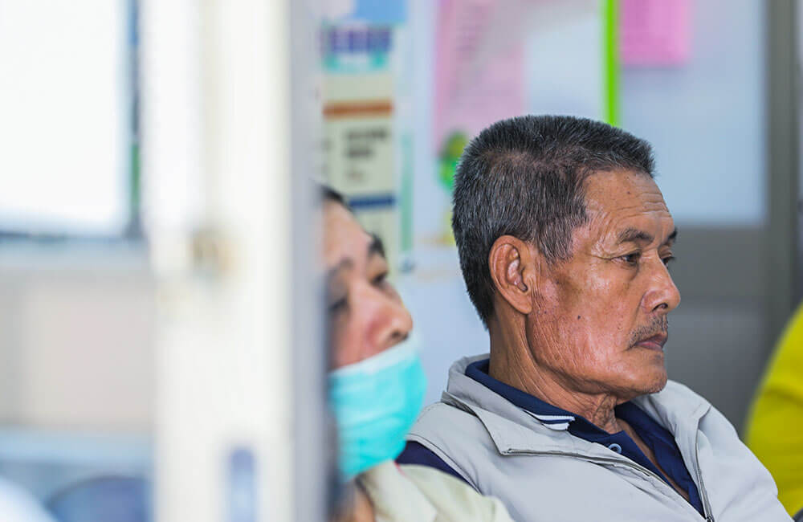
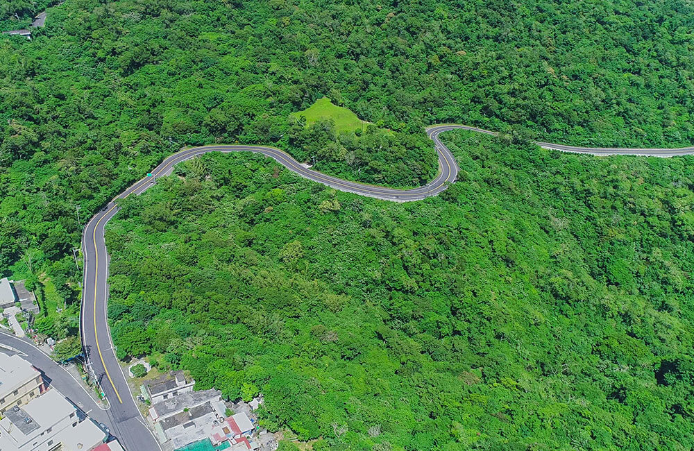
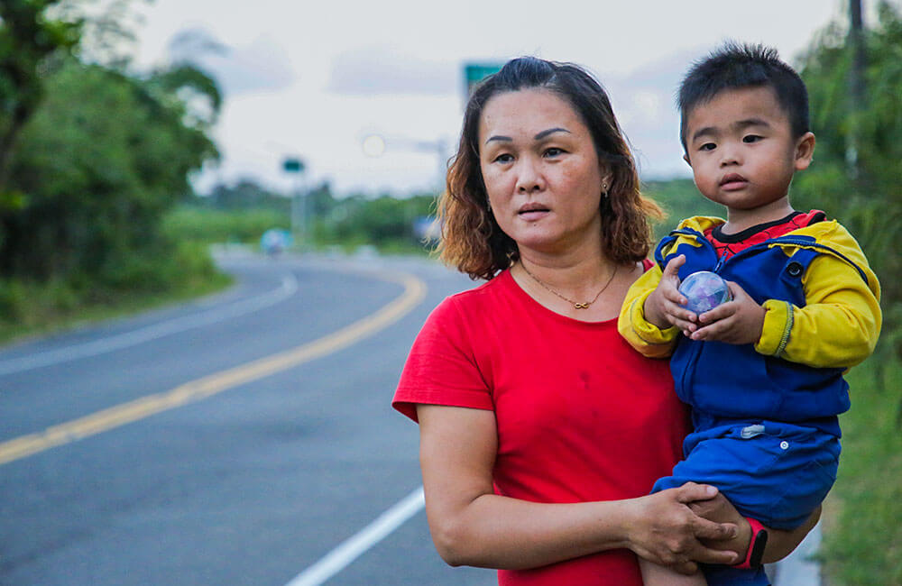
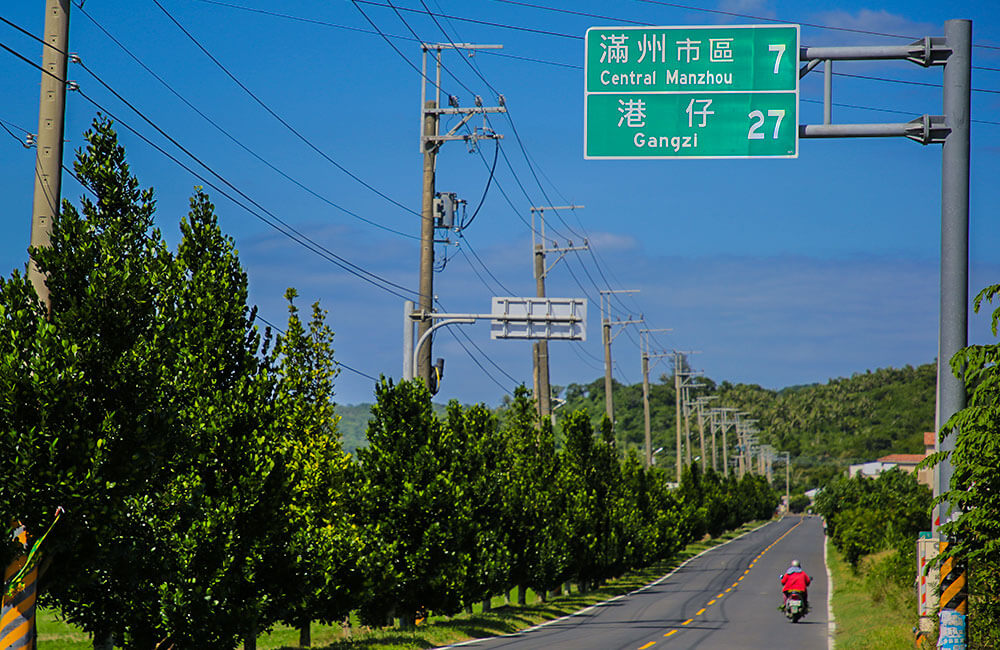
當在地醫療長期失衡，漫漫長路，只能靠民間救護車司機跟老天搶人。恆春救護車司機李朝裕在當地救護超過10年，他自嘲，為了搶救生命，一出車就像拚命三郎，但仍有遇過來不及急救的遺憾，因此他積極爭取建設屏南快速道路。
他估算，建造快速道路至少可縮短20分鐘車程，「你快1分鐘，他生命跡象就多穩定一點。」
居民爭取快速道路多年，這條「救命路」卻始終沒下文，讓陳秀芳無奈說：「我們沒有生病的權利。」只要一重病就必須往北跑，這條路能平安歸來嗎？她緩緩地說出在地人多年的無奈：「我們沒有存著希望。」
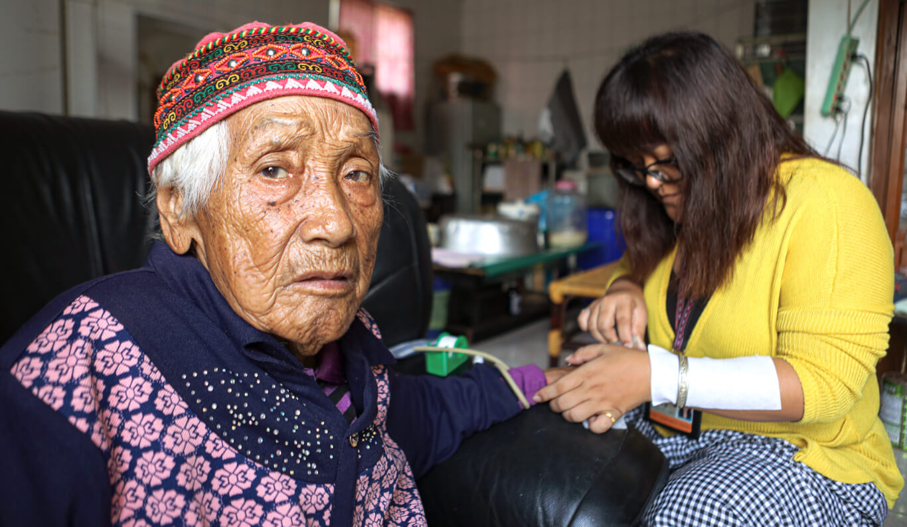

林奐成／採訪報導
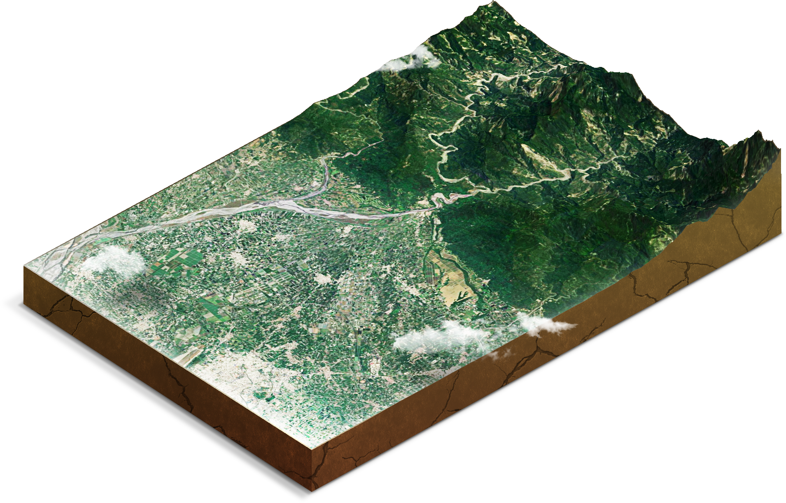
「很多來不及到醫院，在半路上走掉，我們就看到救護車回來了。」山中部落濃霧瀰漫，魯凱族醫師康孝明指著前方蜿蜒的山路，回憶過往景象。對屏東霧台鄉民眾來說，這條台24線既是通往外面的唯一道路，有時更是不歸路。
這座海拔1000公尺高、人口急遽老化萎縮的偏鄉，只是全台山地鄉的縮影。
《蘋果》抽樣調查北、中、南山地鄉數據，包括苗栗泰安鄉、台中和平區、嘉義阿里山鄉、屏東霧台與牡丹鄉，發現去年「到院前心肺功能停止」（OHCA）傷患共24人，到院後卻無一救回，急救成功率是「0」，相比台北成功率高達30%，他們宛如被遺忘的次等公民，只能靠偏鄉醫師「用愛發電」苦撐。
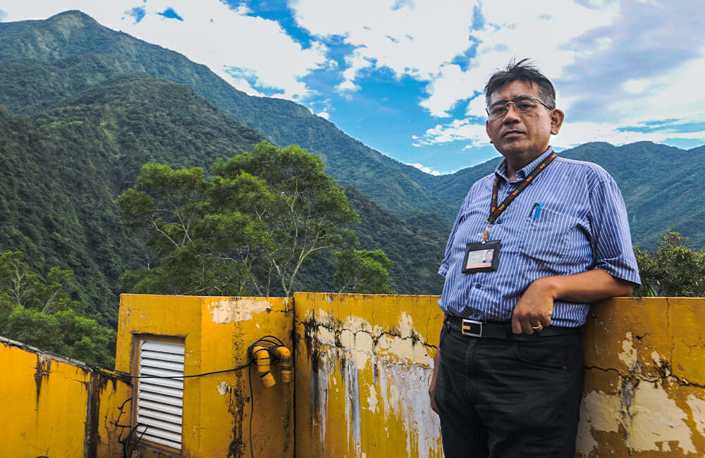
內政部統計顯示，去年全國國民平均壽命為80.9歲，其中山地原住民僅71.3歲，少了近10歲。雖然壽命跟環境、個人生活習慣有關，但醫療資源缺乏也是山地鄉壽命偏低的主因之一。
為了解山地鄉醫療困境，《蘋果》記者日前走訪以魯凱族為主的霧台部落，當地衛生所主任兼醫師康孝明說，最常發生的急重症是中風與心肌梗塞，或遊客發生車禍骨折；深山部落的病患，從報案到運往山下有能力處理的醫院，常超過2小時，遇假日遊客多還會塞車，耽誤黃金救援時間。
若遇到特殊疾病，需要「重度」急救醫院救援時，更必須送到高雄榮總等醫學中心，光車程就要1小時20分，若加上延誤報案與轉診時間，很容易錯過重大創傷60分鐘、心肌梗塞90分、急性缺血性腦中風180分的「黃金救援時間」。
作為第一線救援者的他說，會初步救治急症病患，看心電圖、給氧、上點滴就轉送山下；他形容，山地救援是分秒必爭：「給藥給的藥，該插管的就插管，完了就是請119趕快來，沒有時間讓你去等，光這條路就夠長了。」
康孝明是公費醫師，原本在苗栗山地鄉泰安服務，但2015年父親被診斷出肝癌末期，他趕緊請調到有職缺的屏東枋寮衛生所，就近照顧。
他很早就想調回故鄉服務，但這裡一直沒有出缺，沒想到先是父親癌症過世，母親也驟逝，「不知道老人發生什麼事情，就寫一個心肌梗塞……她事實上也沒有這個病史，也只能接受。」
父母都在山上過世，讓康孝明心中始終有份遺憾。2018年初，他終於能夠回到霧台服務，以母語跟生病長輩溝通，「我回來做是應該的。他們有什麼需求，我就盡量給他們協助。」每天穿梭蜿蜒山路看病，對他來說宛如一條救贖路。
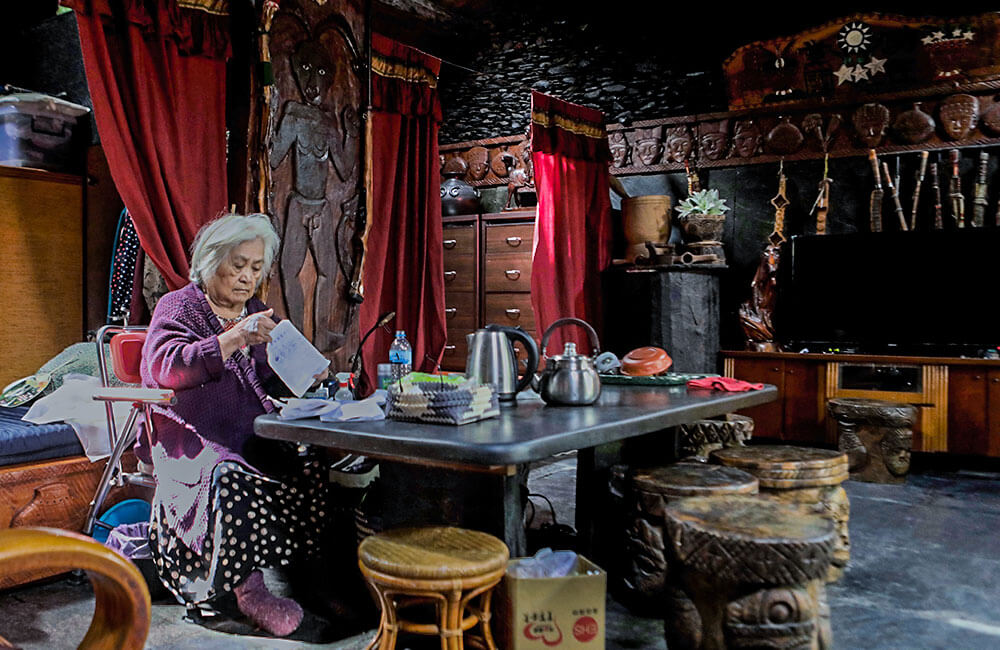
霧台鄉戶籍人口3265，但實際居住僅約1200人且急遽老化，整個偏鄉的醫療靠衛生所2位醫師苦撐，他們不只到偏遠部落做「巡迴醫療」，也會定期到行動不便的病人家裡「居家訪視」。
他們採取輪流值班，當周值班的醫師，晚上會睡在衛生所宿舍24小時待命，隨時為居民提供第一線的急診救援，再視情況送到山下醫院。
對於山區急重症救援困境，衛福部醫事司司長劉越萍向《蘋果》表示，之前曾開會研擬，是否對山區病患，提供直升機救援，但是設置停機坪的維護費很高，使用率卻低，因此目前沒有規劃，救護直升機僅用於離島。
她也強調，經過今年新冠病毒疫情，政府發現應繼續強化「遠距醫療」，例如偏鄉居民遇到重大疾病時，可利用科技將患者的資訊，即時傳到遠方的醫學中心，交給醫師判讀，改善偏鄉醫療。
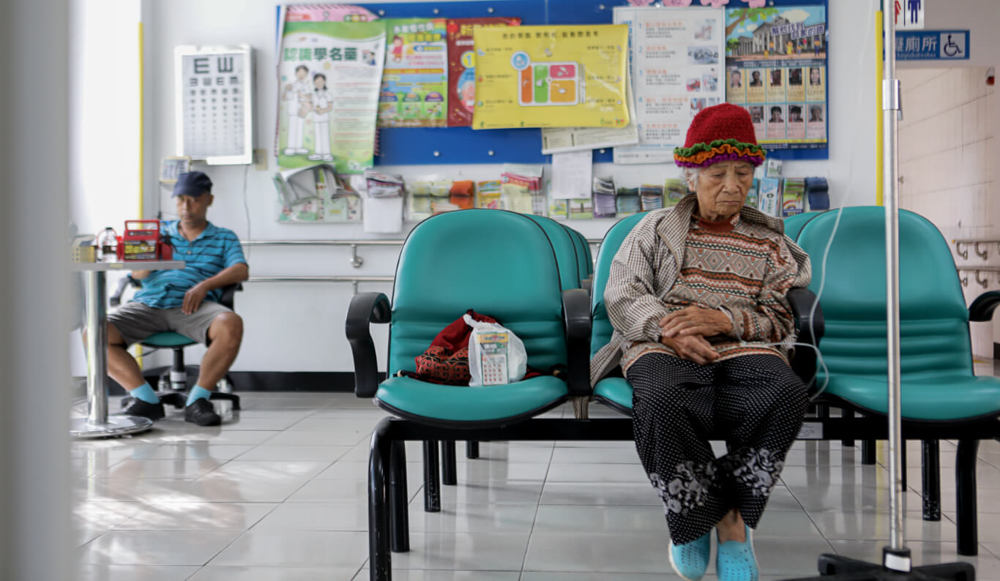

劉怡馨、林奐成、吳宜靜／採訪報導
台灣長期城鄉醫療不平等，衛福部每年投入上億預算要弭平差距，但政策總是「治標不治本」，偏鄉醫療像一棟年久失修的危樓，搖搖欲墜。
《蘋果新聞網》以急重症作為偏鄉醫療指標，盤點大數據發現，有急救能力的121間「重度級」與「中度級」責任醫院多集中市區，許多偏鄉如嘉義大埔、屏東滿州等，到醫院車程超過一小時，急症病患常在半途喪命，淪為醫療難民。
即便中央劃分急救責任醫院，期望作為偏鄉醫療區的後盾，但實際上，處在「戰地前線」的偏鄉地區醫院，常面臨專科能力及人力不足困境，碰上急重症，還沒開始打仗就先輸一截。
據中華民國醫師公會全國聯合會統計，2019年國內每萬人口對應的醫師數，嘉義大埔及金門烏坵竟連一位醫師都沒有，而屏東平地偏鄉滿州僅3.9人、山地鄉霧台6.1人，皆低於世界衛生組織10人的基本需求標準。再對照醫療資源充足的台北中正區，每萬人口竟有126名醫師，顯見國內醫生分布嚴重不均。
政府長期依賴公費醫師解決偏鄉醫療人力缺乏，政策實施逾30年，每年近百位公費生下鄉服務，看似減緩人力短缺，但實際上公費生留任率僅16%，超過8成是服滿後就離開，難以穩定在地醫療能量。
「大部分公費醫師都回到原來的都市，這不是很治本的方式。」嘉義超群診所醫師、曾參與制定醫療政策的徐超群認為，要讓醫師自願到偏鄉服務，應該調整健保醫療給付，「越偏遠的鄉鎮醫師，給付要越高」，提高收入才能增加誘因。
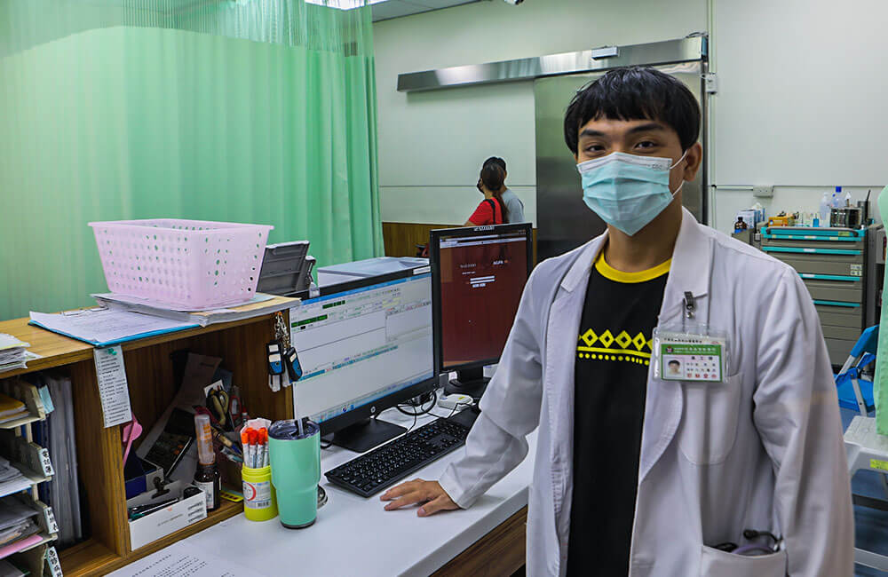
進一步探究，偏鄉地區醫師人力不足，衍生專科人力短缺，公費醫師被要求跨科支援，例如專科是小兒科卻被要求支援內科、精神科值內科病房，使得偏鄉醫療雪上加霜。
曾在恆春基督教醫院服務的公費生曾榮賦就指出，自己專科是內科，但是卻需要支援急診科，「公費醫師哪邊缺就去哪邊，會被要求去看很多科，但你沒有專科後援，所以常需要轉診。」
即使緊急醫療救護是每位醫師具備的能力，但他點出，實務訓練仍有差異，「突然很急的病人過來，我們可能就沒辦法像急診醫師反應那麼快速，或是急救措施沒那麼熟練。」
遇上急重症，第一線醫院的緊急處置，往往影響黃金救援時間，但在跨科支援的亂象下，偏鄉醫療的第一站就出現漏洞。民進黨前立委、現為中山醫學大學附設醫院婦產部醫師的林靜儀指出，「照現在這種，我只要塞人（醫師）給你，就表示我有給你，那永遠解決不了偏鄉醫療，而且這些公費生都會很痛苦。」
公費醫師除了被要求跨科支援，與所學專業不符，薪資低、工時長、實務訓練不足等，都是他們不願留任的原因。如今，衛福部卻在11月初宣布，未來公費醫師下鄉服務年限，將從6年延長為10年，引來外界正反論戰，台北市醫師職業工會更批評，「為什麼要讓充實偏鄉醫療的美意，變得越來越像做錯了什麼事的懲罰？」
林靜儀則認為，公費生服務並非不能延期，但必須同時改革制度，從招募、訓練、人才養成到分發都要檢討，並加強公費生的緊急醫療救護訓練，「假設他在偏鄉醫院，沒有麻醉科或其他專科醫師狀況下，他能夠處理多少急救，應該受這樣的訓練。」
對於留不住公費醫師問題，衛福部醫事司司長劉越萍接受《蘋果》訪問時強調，衛福部已制定「公費醫師服務期滿留任獎勵計畫」，行政院也已核撥10億預算，將為留任的公費醫師，提供最高15萬保障月薪，也研擬給予公職醫師職缺，以強化偏鄉醫療。
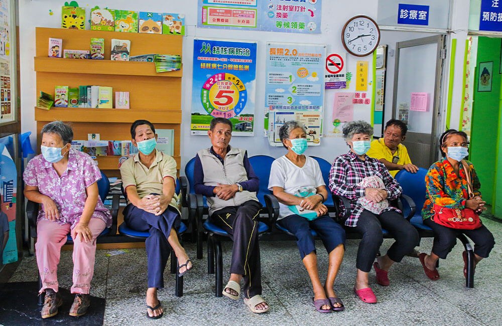
如何全面改善偏鄉醫療？林靜儀指出，健保給付制度必須改革，提高偏鄉醫院、醫師收入，同時增加預算給國家部立醫院及軍醫院，補足人力，讓這些醫院成為急重症的第一道防線。
同時，針對偏鄉基礎醫療，也應該加強社區醫療網，透過在地診所醫師輪值到偏遠地區看診。她強調，當慢性病被照顧好，也能減少急重症發生機率，甚至在發病前就能先到大醫院就診。
「政府要搞清楚，沒把問題問對，答案永遠都是錯的。」林靜儀認為，過去政府並沒有定義清楚偏鄉醫療到底缺什麼，「衛福部設定標準就是，這些醫院有聘到人，數字看起來漂亮，但你看不到真正的需求跟目標。」